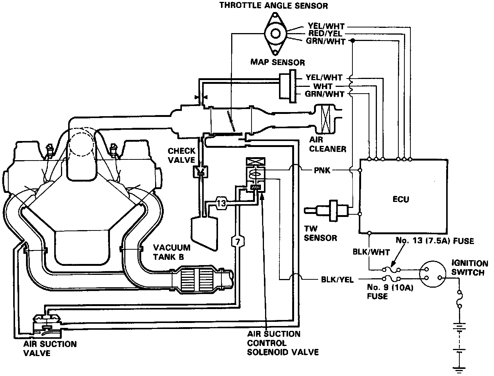

Air Injection: Description and Operation

Description
This system is designed to improve emissions performance by supplying fresh air from the air cleaner into the exhaust manifold through the air suction valve.
Operation
When the air suction control solenoid valve is activated, manifold vacuum raises the diaphragm valve of the air suction valve and fresh air from the air cleaner is induced to the exhaust manifold through the reed valve of the air suction valve by the pulsation of the exhaust gas.
The air suction control solenoid valve activation is delayed after starting for approx. 10 to 60 seconds depending upon coolant temperature.